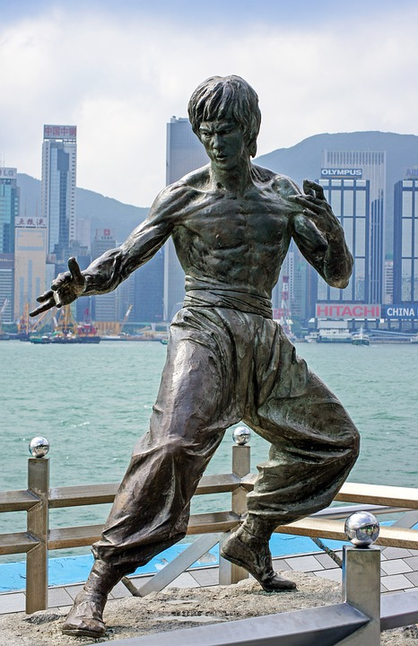
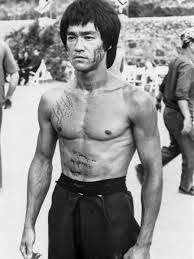
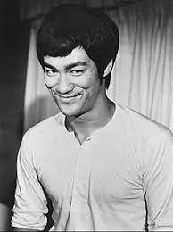
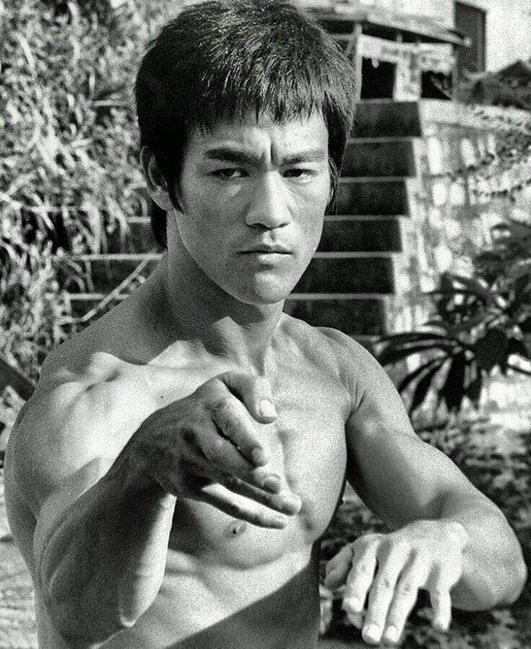
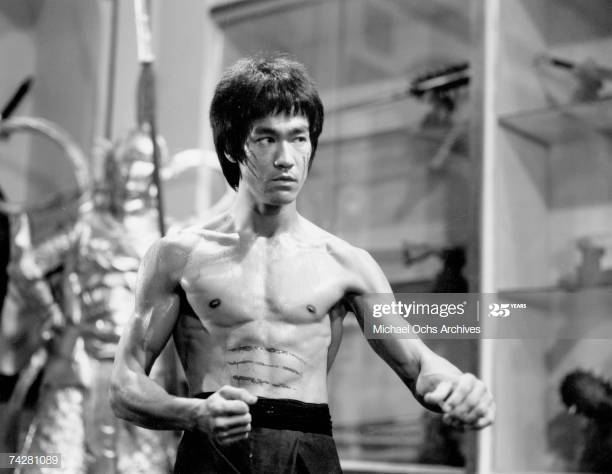

Bruce Lee

Bruce Lee Statue in Hong kong
Here's a time line of Bruce Lee's life:
- 1940 Bruce Lee was born on November 27th, at the Chinese Hospital, in San Francisco's Chinatown. 1955 Wan Kam Leung, a student of Wong's, witnessed a sparring bout between Wong and Lee, and noted the speed and precision with which Lee was able to deliver his kicks.
- 1956 Lee entered the primary school division of La Salle College at the age of 12.Due to poor academic performance,he was transferred to St. Francis Xavier's College (high school) where he would be mentored by Brother Edward, a teacher and coach of the school boxing team.
- 1958 Bruce won the Hong Kong schools boxing tournament, knocking out the previous champion in the final.
- 1959 Lee began teaching martial arts in the United States.It was basically his approach to Wing Chun. Lee taught friends he met in Seattle, starting with Judo practitioner Jesse Glover, who continued to teach some of Lee's early techniques. Taky Kimura became Lee's first Assistant Instructor and continued to teach his art and philosophy after Lee's death. Lee opened his first martial arts school, named the Lee Jun Fan Gung Fu Institute, in Seattle.
- 1961 Lee enrolled at the University of Washington, majoring in drama according to a 1999 article in the university's alumni magazine, not in philosophy as stated by Lee himself and many others. Lee also studied philosophy, psychology, and various other subjects.
- 1964 In 1964, at a demonstration in Long Beach, California, Lee had met Karate champion Chuck Norris. In Way of the Dragon Lee introduced Norris to movie-goers as his opponent in the final death fight at the Colosseum in Rome, today considered one of Lee's most legendary fight scenes and one of the most memorable fight scenes in martial arts film history. The role was originally offered to American Karate champion Joe Lewis.It was at the University of Washington that he met his future wife Linda Emery, a fellow student studying to become a teacher, whom he married in August 1964.
- 1965 At 173 cm (5 ft 8 in) and 64 kg (141 lb), Lee was renowned for his physical fitness and vigor, achieved by using a dedicated fitness regimen to become as strong as possible. After his match with Wong Jack Man in 1965, Lee changed his approach toward martial arts training. Lee felt that many martial artists of his time did not spend enough time on physical conditioning.
- 1966 Bruce and family move to Los Angeles to an apartment on Wilshire and Gayley in Westwood. This is where he begins working on a new TV series called The Green Hornet as Kato. The Green Hornet series starts filming and Bruce is Paid $400 per episode. Bruce buyse a 1966 blue Chevy Nova. Bruce is later known to have gotten the part of Kato because he was the only person who could accurately pronounce the star's name, Britt Reid. He later opens third branch of the Jun Fan Kung-Fu Institute in Los Angeles' Chinatown.
- 1971 Bruce takes a short trip back to Hong Kong to arrange for his mother to live in the U.S. Unknowingly to him, he had become a superstar for The Green Hornet was one of the most popular TV shows in Hong Kong. Later, he is approached by Raymond Chow, owner of a new production company, and offered the lead role in a new film called The Big Boss. Bruce accepts.
- 1972 Location shots are made for Bruce's third film The Way of the Dragon (released in the U.S. as The Return of the Dragon). This time Bruce gets almost complete control the the movie, which he writes, directs, and stars in. Chuck Norris is Bruce's adversary in the final fight scene. Again, this film surpasses all records set by his previous two films.
- 1973 Bruce Lee is walking through the Golden Harvest Studios and overhears Lo Wei in a nearby room bad mouthing him. He confronts Lo Wei who retreats and summons the local police. When the police arrive Lo Wei falsely accuses Bruce of threatened him with a knife concealed in his belt buckle. He further insists that Bruce sign a statement that he will not harm him. Bruce signs the statement to get Lo Wei off his back although Lo Wei lied to the police and Bruce never had a knife nor threatened to kill him. That same day, Bruce appears on the Hong Kong TV show, Enjoy Yourself Tonight with host Ho Sho Shin. Bruce alludes to his problems with director Lo Wei, but does not mention him by name. Bruce is asked to display his physical prowess and demonstrates his abilities. Bruce demonstrates a technique and Shin is hurled across the stage. The show of power causes the press to indite Bruce in the paper and accuse him of bullying the talk show host though this was not the case.
- 1973 Bruce Lee dies in Hong Kong of an apparent cerebral edema (swelling of the brain). After much confusion and debate, doctors declared the death of Bruce Lee as "death by misadventure." Enter the Dragon was delayed from its initial premieres a four days later because of the actors death.A funeral ceremony is held for friends and fans in Hong Kong consisting of over 25,000 people. Bruce is dressed in the Chinese outfit he wore in Enter the Dragon.Enter The Dragon premiers at Graumann's Chinese Theater. The movie is a success, and Bruce Lee achieves world-wide fame.




Click here to read more